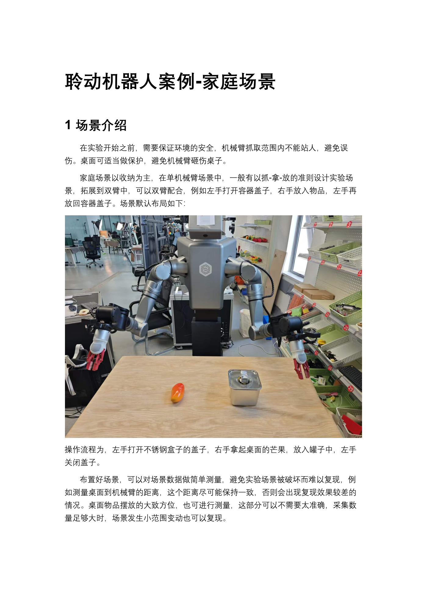
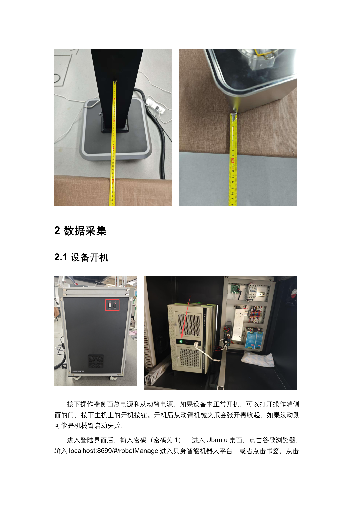
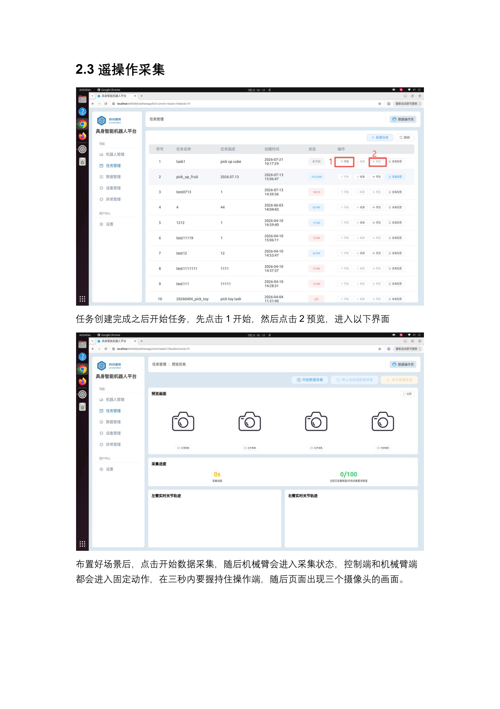
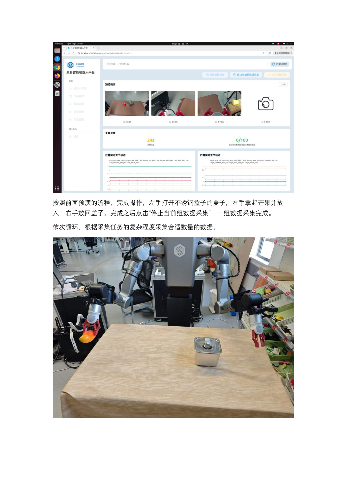

EXP-01 · 8 学时
案例总览与成果演示
先看《家庭收纳场景》成果演示视频，再拆解「感知—决策—执行」与「开盖—取物—入罐—盖盖」闭环，最后沿四段流水线分步进入后续实验。
01学习目标 · 先看成果
- 理解家庭收纳任务：左手打开不锈钢罐盖 → 右手拿芒果放入罐中 → 左手盖回盖子的三步闭环。
- 记住四段流水线：数据采集 → 数据转换 → 模型训练 → 真机推理，各段输入输出清晰。
- 能用「感知—决策—执行」讲清机器人为何能自主完成收纳动作。
- 明确教学动线：本页先看演示，后续三个实验把这段视频「拆开再拼回去」。
建议先完整看一遍演示：接下来三个实验，就是把这段视频「拆开再拼回去」。
02原理：任务定义与感知—决策—执行
收纳任务像教孩子收玩具：「先开盖，再把水果放进去，最后盖好盖子」。机器人并不懂「芒果」是什么，它只是把「三路相机看到的画面 + 当前关节状态」翻译成「下一步关节动作」。这中间有三个角色：感知（相机看现场）、决策(ACT 策略选出动作)、执行(双臂与夹爪动起来)，三者首尾相接形成闭环，跑完一轮就是一次收纳。
任务准则
开 - 拿 - 放 - 盖：左手管罐盖、右手管水果，时序固定不乱套。
示范来源
操作者穿戴 LDT-01 遥操作端，主臂领动、从臂跟随，三路相机同步录像。
学习目标
ACT 策略学会「画面 + 关节状态 → 下一段动作」，部署回真机复现闭环。
成败关键
芒果/罐子按默认布局摆放、桌面环境与采集时一致，坏示范当场剔除。

生活化类比：行为克隆像「跟着大厨学颠勺」——你只看他的手怎么动、锅在哪，不背力学公式；他示范里若混入翻锅失误，你也会学失误——所以坏数据必须剔除，数据质量 > 数据数量。
03硬件与材料
LDT01-STD 一体机
i5-13400F / RTX 4060 Ti 16GB / 64GB RAM / 2TB SSD，Ubuntu 22.04 + ROS2，采训推一体。
主从同构双臂
从动臂（跟随）7 轴谐波关节 DC48V、负载 5kg；主动臂（遥操作端）7 轴总线舵机；二指夹爪 0–90mm。
视觉相机
3 路在用 RGB 相机：头部、左腕、右腕，同时观测盖沿、罐口与果实近景。
场景物料
不锈钢罐 + 罐盖、芒果（或同类水果）、平整桌面；按默认布局拍照留底以便复原。
| 部件 | 关键参数（摘自 00-硬件参数） | 在本课中的角色 |
|---|---|---|
| 三路相机 | 头部 + 左腕 + 右腕 RGB，全局快门 | 提供第三视角 + 双手腕视角，构成策略输入图像 |
| 从动臂 ×2 | 7 轴谐波关节，DC48V，通信 500Hz，负载 5kg | 执行开盖与取物的「真机双手」 |
| 主动臂 ×2 | 7 轴总线舵机，DC12V，100Hz，运动半径 554mm | 遥操作端，人类示范的「输入手」 |
| 二指夹爪 | 开口 0–90mm，夹持 2.5kg，50Hz | 抓取芒果、捏住罐盖的执行末端 |
| 工控机 | i5-13400F + RTX 4060 Ti 16GB + 64GB RAM + 2TB SSD | 采集录制、数据转换、本地训练与推理全在这台跑 |
场景测量提醒（案例原文）：桌面到机械臂的距离保持一致、方位粗略测量即可；采集量够大时可容忍小的位置变动——但默认布局不乱动，复现最稳。
04操作步骤：从开机到四段流水线
S1数据采集
开机布景 → 新建任务 → 遥操作示范，三路视频 + 关节角同步入库
开机布景 → 新建任务 → 遥操作示范，三路视频 + 关节角同步入库
→
S2数据转换
CSV + 视频 → LeRobot v3.0 Parquet + 三路 mp4
CSV + 视频 → LeRobot v3.0 Parquet + 三路 mp4
→
S3模型训练
lerobot-train 驱动 ACT 学习示范
lerobot-train 驱动 ACT 学习示范
→
S4真机推理
ROS2 节点 50Hz 推理，双臂自主开盖入罐
ROS2 节点 50Hz 推理，双臂自主开盖入罐
- 部署与开机：按默认布局摆好罐与芒果 → 测量桌面到基座距离 → 依次开侧面电源与主机电源，开机后夹爪张开再收回。
- 进入上位机：登录 Ubuntu（默认密码 1），浏览器访问
localhost:8699/#/robotManage。 - 建任务与采集：新建任务（名称/描述建议英文）→ 预览轨迹 → 点开始后 3 秒内握持操作端完成示范 → 停止当前组，循环往复。
- 标记坏数据：失误的组点「本次采集失败」，该组不计入训练。
- 转换 → 训练 → 推理：convert 脚本切段转换 → lerobot-train 训练 ACT → 加载 checkpoint 用 /model_ifrun 服务开关复现闭环。



05关键命令（预览，后续实验展开）
以下命令摘自《聆动机器人案例-家庭场景》与 LeRobot 0.4.1 入口，本实验先混个脸熟：
# ① 数据转换：save_data 编号目录 → LeRobot v3.0 数据集 python convert_lerobot_v3_fixed_simple.py \ --input /home/lindenbot/save_data/<组目录> \ --output /home/lindenbot/converted_data \ --start 180 --end 209 # ② 训练 ACT 策略（家庭任务，本地示例，完整参数见 EXP-03） lerobot-train --policy.type=act \ --dataset.repo_id=lindenbot/put_fruit_in_box \ --dataset.root=/home/lindenbot/converted_data \ --batch_size=12 --steps=50000 --save_freq=4000 # ③ 真机推理：启动推理节点后，用服务开关控制自主收纳 ros2 service call /model_ifrun std_srvs/srv/SetBool "{data: true}" # 开始 ros2 service call /model_ifrun std_srvs/srv/SetBool "{data: false}" # 停止
编号提醒：save_data 下的采集编号不从 0 开始，家庭案例从 180 号段起步、取「当前最大编号 = 最新一集」；切段时用
--start/--end 或 --skip 排除坏集。转换在干什么
把散装采集记录（CSV 关节角 + 视频帧）按 episode 切齐，重排成训练框架统一的数据格式。
训练在干什么
让 ACT 网络反复看「当前画面 → 人的下一个动作」，把示范内化成权重/checkpoint。
推理在干什么
真机上加载 checkpoint，把每帧观测实时翻译成关节指令，服务开关随时接管/交还控制权。
一条主线
三条命令共享同一套数据：converted_data 既是训练的读取根目录，也是排查问题的唯一事实来源。
06动画：感知—决策—执行闭环与开盖取物时序
动画：黄点沿反馈回路流动表示「感知→决策→执行→再感知」的闭环；下方高亮框按顺序扫过四步动作时序，第 4 步盖盖后回到第 1 步，即一轮收纳。
观察为什么闭环里还要「再感知」？——盖子开没开、芒果在不在手里，都是动作之后才确定的新事实；每帧都重看一眼，下一步才不会闭眼瞎抓。开盖-取物-入罐-盖盖四步靠这个回路串成一个可循环的任务。
07互动：收纳节拍估算器
拖动滑杆估算一轮「开盖-取物-入罐-盖盖」耗时与总采集时长
等待计算……
案例复盘口径：采集数据 200 次左右、训练步数 500000 步以上，桌面环境与默认布局保持一致，收纳闭环复现才稳。轮数不是越多越好——含失误的轮次会被剔除，有效轮次才是硬指标。
08常见问题
Q 演示视频能正常播放吗？
源片为竖版 720×1280 mp4，Chrome/Edge（Win）自带解码一般可直接播；若黑屏请换 Edge 或本地播放器打开同目录 mp4。
Q 上位机打不开？
先确认一体机开机自检完成（夹爪张开收回）、进度条 100%，浏览器访问 localhost:8699；默认密码 1。
Q 左右手会「串」吗？
采集时就固定分工：左手开/盖盖、右手取/放水果，时序固定；训练数据才有一致的映射规律。
Q 四段顺序能跳吗？
不能。没有合格的采集就没有可转换的数据，没有 v3.0 数据集训练会直接报错，推理也无 checkpoint 可加载。
09拓展阅读
- 《聆动机器人案例-家庭场景》：安全要求、场景测量建议、复现效果评估与成功判据原文。
- 《00-聆动机器人硬件参数介绍》：相机/主从臂/夹爪完整参数表（EXP-01 第 03 章已摘核心行）。
- LeRobot 官方 ACT 论文：Action Chunking with Transformers——一次输出动作块，动作更平滑。
- 对照 IND-03 物料分拣案例：同一条四段流水线，换任务、换物料即迁移——场景变、框架不变。
- 《遥操作设备 LDT-01 软件使用流程（开发者版）》：双人安全制与拖拽模式，EXP-02 详解。
10思考题 · 自测
✅ 完成成果
看完演示视频，能默画出四段流水线并说出每段的输入/输出产物。
🧠 原理收获
用「感知—决策—执行」复述开盖入罐闭环，并解释为什么每帧都要重新感知。
🛠 技能收获
认识 localhost:8699 上位机、任务创建/预览/采集/停止的完整入口与视频演示对照。
📐 评分速览
动画观察 30% + 互动计算 30% + 思考题作答 40%。
思考 1若每次采集时芒果摆放位置都不同，训练出的模型可能学会什么「歪本事」？这说明示范数据的哪类变量必须受控？（提示：EXP-04 会用摆放偏移专门检验这一点。）
思考 2行为克隆只模仿动作，不懂物理。请举一个本场景中「照猫画虎但会翻车」的风险点（提示：罐盖滑脱、芒果碰沿），并说明可用什么手段缓解。